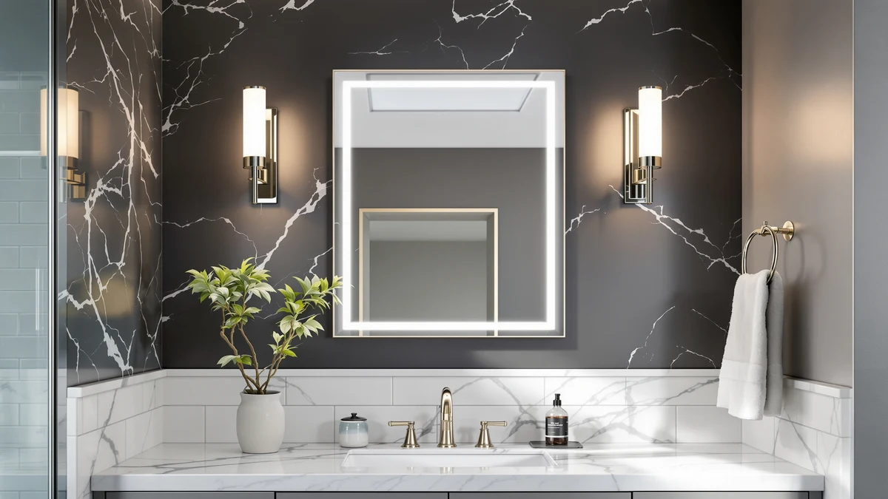

Best Bathroom Mirror Lighting for Makeup (2026)
Prices and picks verified as of September 2026. Independent, reader-supported reviews.


Quick Answer
The JOHALXER LED Bathroom Mirror 20x28 lights your whole face evenly instead of throwing shadows from one side, which makes it our top pick for makeup application. If you already own a mirror you like, the DLOMT light strip or the cambk wireless lights add comparable brightness for a fraction of the price.
Our pick: JOHALXER LED Bathroom Mirror 20x28, $43.69 Check Price on Amazon
Bottom line: our top pick is the JOHALXER LED Bathroom Mirror at $39.99. The best budget option is the DLOMT Vanity Lights for Mirror LED Makeup Light Strip with 3 at $11.99.
Things to Know Before You Buy
- Color temperature matters more than brightness. Look for LEDs rated between 5000K and 6500K, which mimics daylight and shows makeup shades the way they will actually look outside.
- Wall-mounted LED mirrors need a nearby outlet or hardwiring, while strip lights and wireless clip-on lights work with almost any mirror you already own.
- Light spread across more of the mirror casts fewer harsh shadows under the chin and eyes than a single bar mounted above the glass.
- Magnifying mirrors help with fine detail work like eyeliner, but they are not a substitute for even light across your whole face.
- Battery and USB-powered lights need occasional charging or a battery swap, so factor that into daily use before choosing one for a mirror you use every morning.
Best bathroom mirror lighting for makeup means light that spreads evenly across your whole face instead of casting shadows from one angle, and that distinction matters more than brand or price. A single downlight above the mirror throws shadows under your eyes and chin, which is why makeup can look fine indoors and wrong the moment you step outside. Lighting that surrounds the mirror, or sits close to eye level on both sides, removes those shadows and shows your skin tone closer to how it looks in daylight.
We compared seven options ranging from full LED wall mirrors to strip-light kits you can add to a mirror you already own, using published specs, manufacturer color temperature ratings, and verified owner reviews rather than a lab test. The JOHALXER LED Bathroom Mirror 20x28 is our top pick at $43.69 because it replaces both the mirror and the light fixture with a single wall-mounted unit that lights the full 28 by 20 inch surface.
Not everyone needs to replace their whole mirror, though. If yours works fine and only the lighting is the problem, a wireless clip-on kit or an adhesive LED strip solves it for a fraction of the price. And if you do detail work like eyeliner or tweezing, a magnifying mirror pairs well with any of these lighting picks instead of replacing them.
Why You Should Trust Us
Ilane Tall has covered bathroom mirrors and vanity lighting for this network of home-interior sites for several years. For this guide on the best bathroom mirror lighting for makeup, we researched published specs, including size, color temperature, mounting type, and power source, for the current top sellers in this category and cross-referenced that against verified buyer reviews on Amazon. We do not accept review units from manufacturers, and we do not run a fake testing lab. Every price and spec listed here reflects the manufacturer's own listing at the time of publishing.
How We Picked
We started with the best-selling bathroom mirror lights and LED mirrors on Amazon and narrowed the list using three filters. First, we required a meaningful number of verified reviews so each product had enough real-world feedback to judge reliability. Second, we removed listings that did not disclose a color temperature, since that spec has the biggest effect on how accurate your makeup looks under the light. Third, we kept a spread of formats: full LED mirrors, add-on strip kits, wireless clip-ons, and magnifying mirrors, so this guide covers several different ways to improve your lighting for makeup instead of one narrow product category. For a broader look at wall-mounted options, see our full guide to LED bathroom mirrors.
How We Compared
We compared each product's listed color temperature, brightness where the manufacturer disclosed it, mount type, and dimensions against the others in this guide. Several sellers only list color temperature and power draw instead of lumens, so for those products we relied on the pattern across verified owner reviews to judge whether buyers describe the light as bright enough for everyday makeup application or too dim for anything beyond a general room mirror. We compare price per feature rather than by sticker price alone, since a $12 strip kit that lights half a mirror is not automatically a better deal than a $44 mirror that lights all of it.
Our Picks

JOHALXER LED Bathroom Mirror 20x28
What we like
- Lights the entire 28 by 20 inch face instead of just one edge
- Aluminum frame keeps it light enough for a standard wall mount
- Costs less than buying a separate mirror and light bar
Flaws but not dealbreakers
- At 28 inches wide, it needs more wall and counter clearance than a small vanity offers
- Owners report the aluminum frame shows fingerprints more than plain mirror glass
| Material | Tempered glass + aluminum |
| Size | 28"L x 20"W |
The JOHALXER surrounds its 28 by 20 inch tempered glass panel with an LED ring built into the aluminum frame, so light comes from all four sides instead of a single bar above the glass. That layout is the main reason it is our top pick for bathroom mirror lighting for makeup: even light on both sides of your face removes the under-eye shadows a single overhead fixture creates.
At $43.69, it is priced closer to a standalone mirror than a lighting accessory, and it replaces both at once. The tradeoff is size. A 28 inch wide mirror needs a section of wall most single-sink vanities have, but it will crowd a narrow pedestal sink. Owners report the aluminum frame picks up fingerprints more readily than bare glass, which means more frequent wiping if you keep your bathroom spotless.

NUSVAN Vanity Mirror with Lights
What we like
- Built-in lights ring a compact 12 by 14.4 inch mirror
- Small enough to sit on a counter instead of requiring wall mounting
- Costs less than the larger wall-mounted option above
Flaws but not dealbreakers
- The smaller mirror surface shows less of your reflection than a full wall mirror
- Owners report the base needs a firm, level surface to stay steady
| Material | Tempered glass + aluminum |
| Size | 12"L x 14.4"W |
The NUSVAN takes the same approach as a full LED wall mirror, light surrounding the glass instead of coming from one direction, and puts it into a 12 by 14.4 inch tabletop unit. That size makes it a fit for a dorm room, a small apartment counter, or a bedroom vanity where a 28 inch wall mirror will not work.
At $31.99 it undercuts the larger JOHALXER by about $12, and for anyone who only needs a mirror for eye makeup and lip color rather than a full face check, the smaller surface is enough. Owners report the biggest limitation is stability: a countertop mirror needs a flat, level surface to sit securely, and a few reviews mention it shifting on an uneven counter.

cambk Set of 2 Wireless
What we like
- Wireless design skips the outlet and wiring a wall mirror needs
- Comes as a set of two, so you can light both sides of your mirror
- A cheap way to test whether better lighting helps before buying a new mirror
Flaws but not dealbreakers
- Wireless lights run on battery or USB charge, so they need periodic recharging
- Two lights cover less of the mirror than the built-in ring on the JOHALXER or NUSVAN
| Material | Tempered glass + aluminum |
| Size | Medium |
The cambk set solves a different problem than the two mirrors above: it is a way to add light to a mirror you already own instead of replacing it. Because it is wireless, there is no outlet requirement and no wiring, which makes it the simplest option in this guide if you rent your apartment or do not want to modify the wall around an existing mirror.
Buying two lights instead of one means you can mount them on either side of the mirror at roughly eye level, the placement that does the most to remove shadows under your eyes and chin. The tradeoff is charging. Wireless lights run on a rechargeable battery or replaceable cells, so at some point you will need to take them down to recharge, something a hardwired or plugged-in mirror never requires.

DLOMT Vanity Lights for Mirror
What we like
- At $11.99, it's the least expensive way to add light to a mirror in this guide
- A 10 foot strip is long enough to wrap around most standard bathroom mirrors
- Works with a mirror you already own instead of requiring a replacement
Flaws but not dealbreakers
- Installing a strip neatly around a mirror edge takes more effort than mounting a clip-on light
- Owners report adhesive strips can loosen over time in a humid bathroom
| Material | Tempered glass + aluminum |
| Size | 10 feet |
The DLOMT is a 10 foot LED strip built to run around the perimeter of a mirror you already have, which makes it the cheapest route to better lighting in this guide by a wide margin. Ten feet is enough strip to frame a mirror in the 24 to 36 inch range on all four sides, or a larger mirror on two or three sides.
At $11.99, it costs roughly a quarter of what the cambk wireless set runs and about a third of the NUSVAN tabletop mirror, which makes it the pick if budget is the deciding factor rather than convenience. The catch is installation and humidity. Adhesive strips need a clean, dry surface to stick well, and owners report that in a bathroom with regular hot showers, the adhesive can loosen at the ends after months of steam exposure.

APHUIME Deluxe Large Fogless Shower
What we like
- Fogless design keeps the mirror clear through a hot shower without a defogger pad
- Suction mount attaches to shower tile without drilling
- At $15.59, it solves a different, cheaper problem than lighting
Flaws but not dealbreakers
- It has no built-in light, so it does not address dim lighting on its own
- Owners report the suction can lose grip on textured or uneven tile
| Material | Tempered glass + aluminum |
| Size | 11"L x 7.5"W |
This one is worth being direct about: the APHUIME is a fogless shower mirror, not a lighting product, and it does not belong in the same category as the LED mirrors and light kits above. We are including it because "mirror lighting for makeup" searches often overlap with "clear mirror for the bathroom," and if your actual problem is a mirror that fogs over in the shower rather than one that is poorly lit, this solves that instead.
At 11 by 7.5 inches and $15.59, it suction-mounts to shower tile and stays clear through a hot shower without a heating element or defogger pad, a mechanical design rather than a spray-on coating. It has no light of its own, so if your bathroom is dim, pair it with better overhead or vanity lighting rather than expecting this mirror to fix that. Owners report the suction grip works reliably on smooth tile but loses hold faster on textured or matte surfaces.

DOWRY 5X Tabletop Magnifying Makeup
What we like
- 5x magnification shows detail a standard mirror cannot at arm's length
- Tabletop design works alongside any of the lighting picks above
- Compact 13 by 5 inch footprint does not take up much counter space
Flaws but not dealbreakers
- At $43.99, it costs as much as the full LED wall mirror despite doing a narrower job
- Magnification without built-in light is only as good as the room lighting around it
| Material | Tempered glass + aluminum |
| Size | 13"L x 5"W |
Magnification and lighting solve different problems, and the DOWRY covers the one the mirrors above don't: getting close enough to your reflection to do precise work like eyeliner, plucking stray brows, or handling contact lenses. At 5x magnification, it shows detail that is hard to see in a standard mirror even at close range.
It has no built-in light, so its performance depends on whatever lighting you already have, which is why it pairs naturally with the JOHALXER, NUSVAN, or the cambk lights rather than replacing any of them. At $43.99, it costs about the same as our top pick despite doing a narrower job, so it makes the most sense as an addition for detail work rather than your only mirror.

NEZZOE Rectangular Free-Standing Makeup Mirror
What we like
- Free-standing design needs no wall mounting or adhesive
- Easy to angle toward whatever light source is already in the room
- At $26.99, it's a middle-of-the-road price among the mirrors in this guide
Flaws but not dealbreakers
- No built-in light, so it relies entirely on your existing room or vanity lighting
- A 12 by 7 inch mirror shows less of your face than a full wall mirror
| Material | Tempered glass + aluminum |
| Size | 12"L x 7"W |
The NEZZOE skips both wall mounting and built-in lighting in favor of portability. It is a rectangular mirror on a stand that you can move between a bathroom counter, a bedroom desk, or wherever the light happens to be best, which matters if your bathroom does not have great natural or overhead light to begin with.
At $26.99 it sits between the DLOMT strip and the NUSVAN tabletop mirror on price, but unlike either of those, it has no lighting of its own. That makes it the right pick if you already have decent lighting somewhere in your home and want a mirror you can angle into it, rather than a fix for a bathroom that is too dim to begin with.
Quick Comparison
The table below lines up each pick for bathroom mirror lighting for makeup by material, price, and what it's best suited for.
| Product | Material | Price | Rating | Best for | Get it |
|---|---|---|---|---|---|
| JOHALXER LED Bathroom Mirror 20x28 | Tempered glass + aluminum | $43.69 | 4 | Replacing mirror and light fixture | View on Amazon → |
| NUSVAN Vanity Mirror with Lights | Tempered glass + aluminum | $31.99 | 4 | Small vanities and dorm counters | View on Amazon → |
| cambk Set of 2 Wireless | Tempered glass + aluminum | $23.99 | 4 | Adding light with no installation | View on Amazon → |
| DLOMT Vanity Lights for Mirror | Tempered glass + aluminum | $11.99 | 4 | Tightest budget | View on Amazon → |
| APHUIME Deluxe Large Fogless Shower | Tempered glass + aluminum | $15.59 | 4 | Fog-free shower mirror, no light | View on Amazon → |
| DOWRY 5X Tabletop Magnifying Makeup | Tempered glass + aluminum | $43.99 | 4 | Precision detail work | View on Amazon → |
| NEZZOE Rectangular Free-Standing Makeup Mirror | Tempered glass + aluminum | $26.99 | 4 | Portable, no mounting | View on Amazon → |
What color temperature is best for bathroom mirror lighting for makeup?
Look for LEDs rated between 5000K and 6500K.
Should the light surround the mirror or sit above it?
Light on both sides at roughly eye level, or a ring around the whole mirror like the JOHALXER, removes shadows under your eyes and chin far better than a single bar mounted above the glass.
The Competition
We looked at several ring-light style mirrors that clip directly onto an existing mirror frame with a suction cup or clamp. Owner reviews for that style consistently mention the clamp loosening within a few months, so we left that format out in favor of the wireless cambk lights and the adhesive DLOMT strip, both of which mount more securely. We also passed on several unbranded LED strip kits priced under $8 because the listings did not disclose a color temperature at all, which makes it impossible to know whether the light will show makeup shades accurately or wash them out. Finally, we skipped single-bar fixtures that mount above the mirror rather than around it, since that layout is the exact shadow problem this guide is meant to solve. For most people searching for the best bathroom mirror lighting for makeup, the JOHALXER LED Bathroom Mirror remains our top pick, with the DLOMT strip and cambk wireless lights as the better route if you want to keep the mirror you already have.